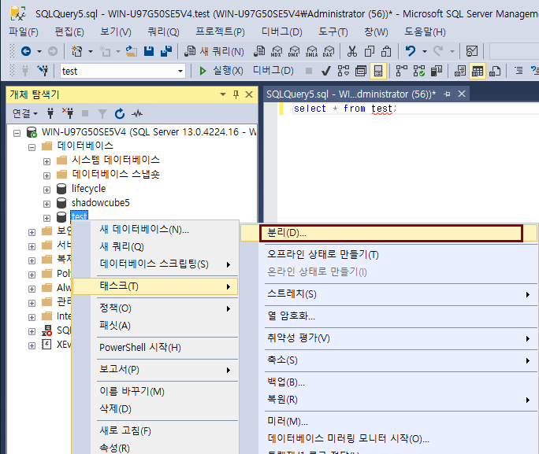
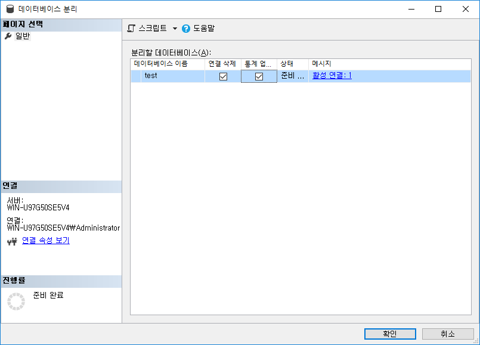
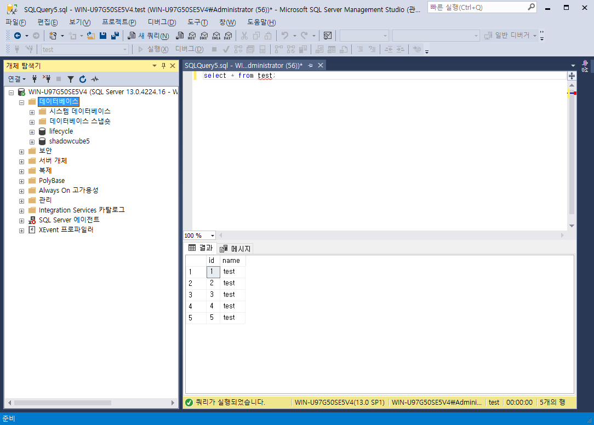
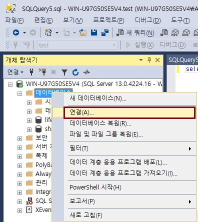
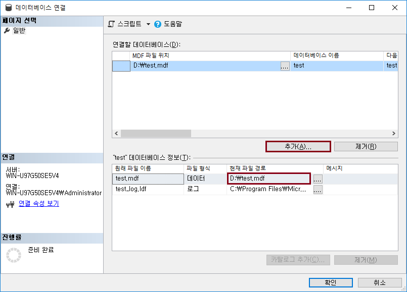

데이터베이스 분리 및 삭제
데이터베이스 분리 및 연결
-
데이터베이스 분리 및 연결이 무엇인지 알아보자.
데이터베이스 분리 방법
-
데이터베이스 > 태스크 > 분리

-
필요하면 연결 삭제 및 통계 업데이트 체크 후 확인

-
test 데이터베이스가 사라진 모습

-
test.mdf 파일을 다른 디스크에 복사
데이터베이스 연결 방법
-
데이터베이스 > 연결

-
추가 > test.mdf 파일 경로 선택 후 확인

-
test 데이터베이스가 다시 연결되 모습을 볼 수 있다.
Let's Prcactice
-
분리, 연결은 왜 만들어졌을까 생각해 보자.
처음으로
이전
다음